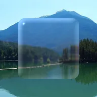

Liquid Glass

Maakt van de vorm van de laag helder, afgerond glas, zoals een telefoonknop: de lagen erachter buigen het sterkst bij de rand, met een felle rand aan de verlichte kant en een zachtere aan de andere kant. Mat vervaagt wat erachter ligt en Regenboogrand splitst de kleuren bij de rand.
Instellingen
| Instelling | Type | Bereik | Standaard |
|---|---|---|---|
| Rand | Getal | 0 px tot 300 px | 40 px |
| Buiging | Getal | -300 px tot 300 px | 45 px |
| Mat | Getal | 0 px tot 40 px | 3 px |
| Regenboogrand | Getal | 0% tot 100% | 30% |
| Lichthoek | Hoek | -3600° tot 3600° | 135° |
| Hooglicht | Getal | 0% tot 100% | 80% |
| Kleur | Kleur | – | #FFFFFF |
| Tint | Getal | 0% tot 100% | 8% |